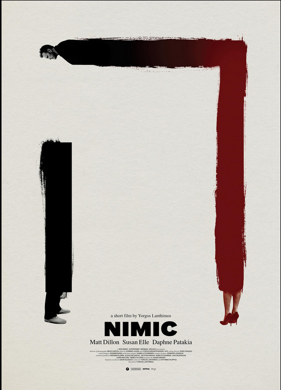

Yorgos Lanthimos
2019
12 minutes
TITLE: Nimic TEXT PLACEHOLDER 018
This short film is a good reminder that everyone has a doppelganger, whether they look like you or not. You've had several doppelgangers over the years, and you've even found yourself on occasion spotting yourself in the background of other people's pictures on social media at some event you plausibly may have attended and asking yourself, "Holy shit, have I let myself go that much" before zooming in and finding that it's an entirely different person. There are plenty of people who look like terrible versions of yourself out there, not that you are always completely pleased with what you see in the mirror. You often worry about those people being mistaken for you. Or you find yourself outrageously unflattered when you find out someone else saw them and mistook them for you...
When you lived in Madison, you apparently had a very convincing dirtbag doppelganger who looked an alarming amount like you. You never encountered this person directly, but on numerous occasions you were confronted by people who thought you were him. This usually was an unpleasant experience and would involve someone squaring up on you and asking "Hey asshole, where the FUCK is my money?" Or they would rab you by the shirt and start demanding, "You stay the fuck away from my goddamn girlfriend you creep or I'm going to beat your ass!" This would follow with you looking alarmed and them doing a double-take and saying, "Oh sorry, I thought you were so-and-so...you look exactly like him!" Always the same name. You're not sure how often so-and-so got mistaken for you, but you're sure it was probably a pleasant change of pace for him when he did.
You remember on at least one occasion walking into a bar and encountering someone who looked eerily like yourself. You had quite a beer buzz going at the time, and you recall having the utterly absurd thought--"Oh no, what do I do...I'm already here!"
You're glad Matt Dillon is still working and you remind yourself that you'd rather not watch The House That Jack Built.
Time to choose something different: